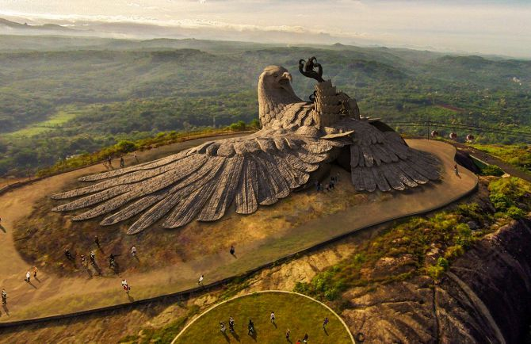
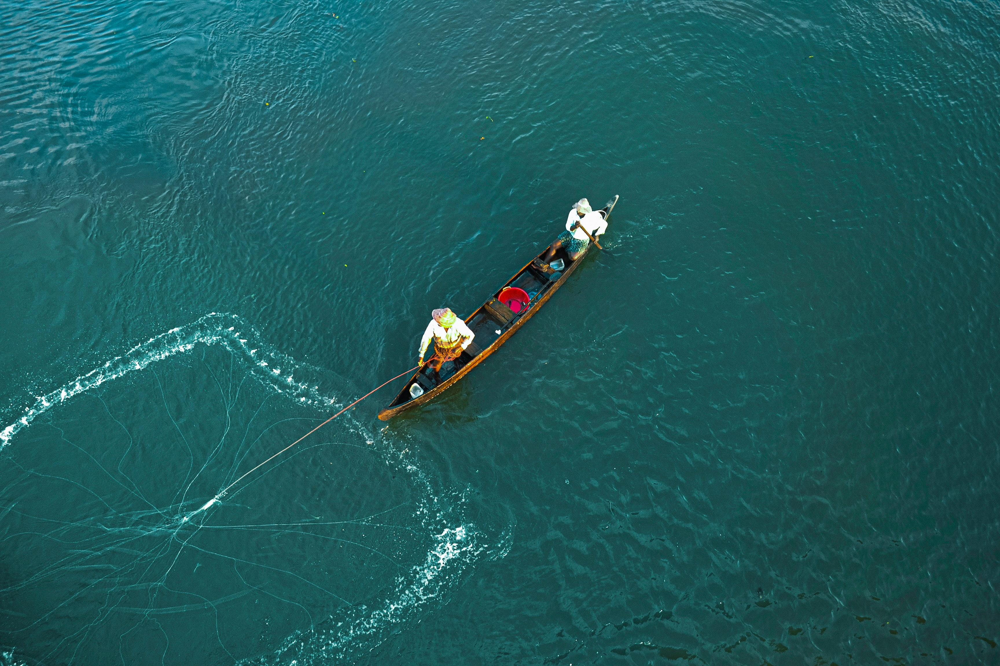
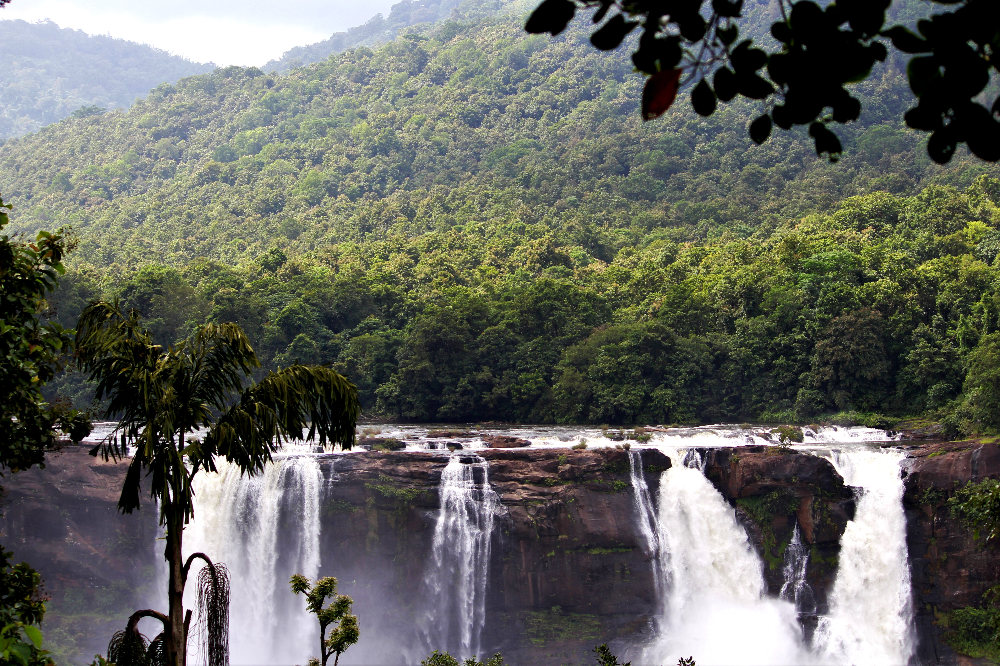
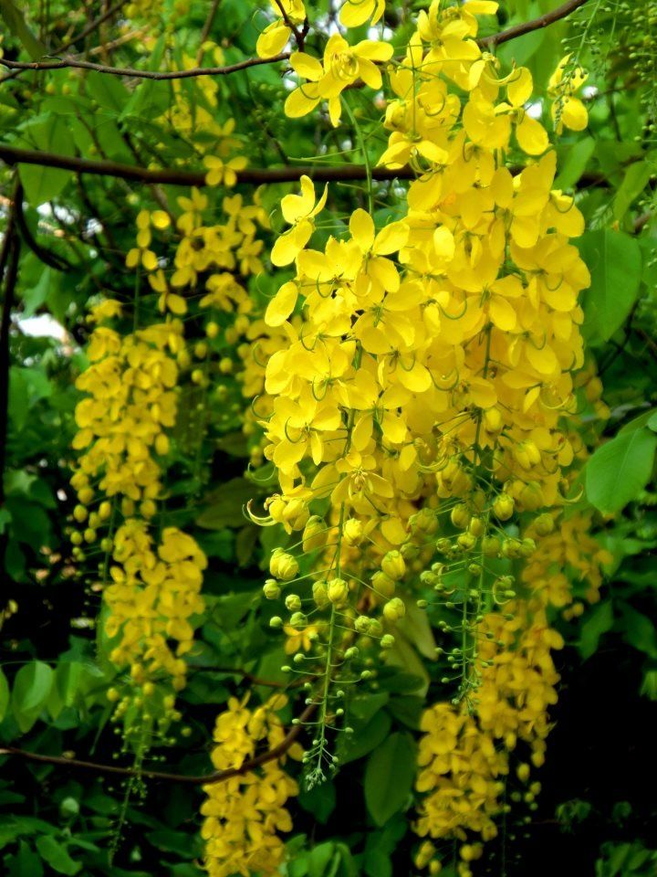

Kerala is one of the most beautiful tourist destinations which attracts numerous tourists all year round. Bestowed with a scintillating landscape evident in its verdant hill stations, backwaters, mesmerizing beaches, dense forests and scenic vistas, Kerala is a perfect place to vacation alone or with loved ones. There are a number of tourist places to visit in Kerala that range from coastal cities to hill stations and each one of them offers you something unique and indigenous to enjoy and cherish. If you are planning a trip to visit God’s Own Country, scroll through our list of best tourist places to visit in Kerala and plan your itinerary accordingly!









Here is a Beautiful video Focusing on the Beauty of KERALA